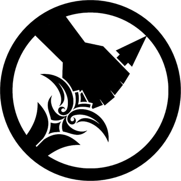

Kliknij, by zapoznać się z cennymi informacjami na temat KE.

Kliknij, by zapoznać się z cennymi informacjami na temat Omega-1.
Sekcja Zapoznawcza | Baza Danych: Orientacja & Regulacje
Większość personelu Fundacji uważa Komitet ds. Etyki za żart. Jesteśmy postrzegani jako zgraja bezużytecznych biurokratów, którzy nie mają pojęcia, jak funkcjonuje rzeczywistość w placówkach operacyjnych.
Prawda jest inna. Jesteśmy jedynymi, którzy wiedzą wszystko. Komitet jest świadomy każdego detalu, każdej najmroczniejszej tajemnicy. To my jesteśmy sumieniem Fundacji.
To my decydujemy o tym, co jest "akceptowalne", a co "niepotrzebnie okrutne". Każda procedura przechowawcza obiektu Keter przechodzi przez nasze ręce. Balansujemy skalę zła, pilnując, by Fundacja nie stała się potworem, z którym walczy.
Personel Klasy D stanowi niezbędny zasób dla testowania obejmów SCP. Choć ich położenie jest instrumentalne, Komitet ds. Etyki ustanowił precyzyjne standardy zawarte w Wytycznych Bytowych Klasy D.
| Parametr | Standard |
|---|---|
| Przestrzeń minimalna | 3,5m × 2,5m (8,75m²) na osobę |
| Temperatura | 18°C - 24°C, regulowana przez nadzór |
| Oświetlenie | 12h dzień/noc, minimum 300 lux |
| Wentylacja | Minimum 6 wymian powietrza na godzinę |
| Parametr | Standard |
|---|---|
| Minimalna dawka kaloryczna | 2500 kcal dziennie (zbilansowana) |
| Woda pitna | Dostęp 24/7, minimum 2L dziennie |
| Badania medyczne | Minimum raz miesięcznie |
| Przeglądy psychiatryczne | Po każdym teście memetycznym/stresu |
| Parametr | Standard |
|---|---|
| Zakaz tortur | Surowo zakazane poza testowaniem/samoobroną |
| Dostęp do informacji | Informacja o eksperymentach w miarę możliwości |
| Wsparcie psychologiczne | Obowiązkowe po ekspozycji anomalii |
| Rekompensata | Finansowa dla uwolnionych (zależy od służby) |
Jednostka Administracyjna | Bezpośredni Egzekutorzy Komitetu ds. Etyki
Mobilna Formacja Operacyjna Omega-1 („Law's Left Hand") jest elitarną jednostką operacyjną podlegającą bezpośrednio Komitetowi ds. Etyki Fundacji SCP. Formacja została utworzona w celu egzekwowania decyzji Komitetu oraz zapewnienia przestrzegania Kodeksu Etycznego we wszystkich obszarach działalności Fundacji.
Członkowie Omega-1 rekrutowani są spośród najbardziej zaufanych, elitarnych, doświadczonych ludzi. Każdy operator przechodzi rygorystyczny proces selekcji obejmujący ocenę umiejętności bojowych, zdolności operacyjnych, odporności psychicznej oraz lojalności wobec Komitetu ds. Etyki.
Członkowie jednostki są szkoleni do działania zarówno w środowisku konwencjonalnym, jak i podczas operacji związanych z zagrożeniami anomalnymi. Każdy członek jednostki ma obowiązek spełniać wymóg anonimowości. Ze względu na wysoki poziom operacyjny, odpowiadający wręcz MTF Alpha-1 („Red Right Hand"), każdy członek jest zachipowany.
Podstawowym zadaniem Omega-1 jest wykonywanie poleceń wydawanych przez Komitet ds. Etyki. Obejmuje to prowadzenie dochodzeń (przez Detektywów, nie Żołnierzy), zabezpieczanie miejsc zdarzeń, zatrzymywanie personelu podejrzanego o poważne naruszenia procedur oraz wspieranie działań mających na celu przywrócenie zgodności z obowiązującymi standardami etycznymi.
Jednostka posiada uprawnienia pozwalające na interwencję w sytuacjach, w których inne struktury Fundacji nie są w stanie lub nie chcą podjąć odpowiednich działań.
Szczególną cechą jednostki jest możliwość działania wobec personelu dowolnego szczebla. W przeciwieństwie do większości formacji bezpieczeństwa Fundacji, operatorzy tej jednostki mogą prowadzić działania przeciwko kierownikom, dyrektorom placówek, starszym badaczom, a w wyjątkowych okolicznościach nawet wobec najwyższych przedstawicieli administracji. Żaden członek Fundacji nie znajduje się całkowicie poza zakresem ich kompetencji, jeśli istnieją podstawy do podejrzeń o poważne naruszenie zasad etycznych.
Każdy członek personelu Fundacji posiadający dowody na poważne naruszenie standardów etycznych ma prawo i obowiązek aktywować protokół interwencyjny.